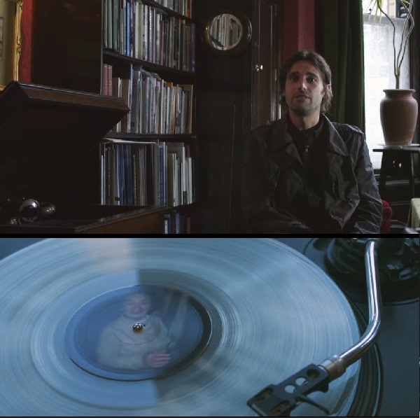

Pressing Your Dead: A New Company Turning Ash into Vinyl LPs

Image: Press your dead , 2017, video still, https://www.youtube.com/watch?time_continue=336&v=IKBh6ZjJlcI
What started as a joke has now got people planning their how they want their relatives to remember themselves through sound.
Andvinyly is a company which specialises in pressing human ashes after the remains have been cremated into vinyl records. A lover of sounds and musician, Jason the creator of Andvinyly always say sounds as a way of remembering the deceased. Through breathing, sniffling, voice and or even songs associated with them at a particular time or occasion can be live out again.
John Hobson from Scarborough contacted Andvinyl to press the remains and mini disc recordings of his departed mother. John remembers his mother through her ability to recall and recite stories at will and wanted to bring this to back to life through vinyl.
Though compromising the sound quality by pressing the ash into the vinyl, the presence of pops and crackles let the listener know that their loved ones are there with them.
There are also extras you can purchase, such as having original artwork for your record, either by giving Andvinyly a photo or arranging a “pre-death sitting”. For 580 euro per track you can have tailormade music composed, with lyrics, beats, or styles suggested by the client.
you can have your own cremated ashes pressed into a record by Andvinyly. For 3500 euro, you can get up to 30 discs, each with 24 minutes of audio - 12 minutes per side.